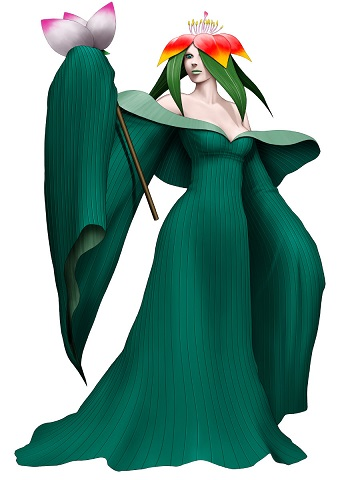

Les Piantas
Originaires du continent d'Halshinne, ils vivent près des sources d'Azer dans le désert, sous forme de tribu un sage à leur tête. Les humains ont beaucoup de difficultés à parvenir jusque là-bas avec le désert de Kalaharas donc on ne sait pas si certains on réussir à survivre au voyage pour aller les rencontrer.

Durant le grand conflit
Les piantas sont restés en marge de la guerre entourés par le désert. Ils ne cherchent pas le conflit, ils vivent paisiblement avec la nature.
Des plantes animées
Ils ressemblent à une plante avec des membres leur permettant de pouvoir se déplacer, communiquer et manipuler. Il en existe des petits et des grands atteignant entre 60 centimètres et 2,20 mètres pour un poids allant de 20 à 100kg. Ils peuvent prendre la forme de buissons, d'arbres, de fleurs ou même de fruits. Les piantas rayonnent d'une beauté surnaturelle et ils le savent, ils n'arrêtent pas de s'en vanter et d'en profiter. Ils sont généralement plus intelligents que les autres peuples deimos. Pour pouvoir utiliser une arme humaine, elle doit souvent être modifiée pour correspondre.
Noms piantas
Les deimos ne possèdent pas de nom de famille, cela ne fait pas partie de leur culture. (les noms liés aux plantes / dryades marchent plutôt bien)
Noms masculins : Opis, Absinthis, Lotus, Ovalis, Geranis.
Noms féminins : Camellia (présent dans le jeu), Aconite, Lavandia, Rose, Eucalyptia.
Traits
Augmentation de caractéristiques. Votre Intelligence augmente de 2 et votre Charisme de 1.
Âge. Un pianta atteint l'âge adulte à 2 ans et a une longévité de 700 ans environ.
Alignement. Ils vouent un attachement particulier aux sources d'Azer, rares sont les piantas qui s'en éloignent volontairement. Ils sont assez neutre dans leur manière de penser et d'agir.
Taille. Les piantas mesurent en moyenne entre 60 centimètres et 2,20 mètres de haut, pour un poids variant entre 20 et 100 kg. Votre taille est Petite ou Moyenne (si supérieure à 1,20 mètre).
Vitesse. Votre vitesse de base est 9 mètres si de taille Moyenne ou 7,5 mètres si de taille Petite.
Chanceux (uniquement si de taille Petite). Lorsque vous obtenez un 1 au dé d'un jet d'attaque, de caractéristique ou de sauvegarde, vous pouvez relancer le dé et devez alors utiliser ce nouveau résultat.
Empoisonneur (uniquement si de taille Moyenne). Vous êtes capable de générer jusqu'à 6 épines vénéneuses au maximum. Lorsque vous utilisez une sarbacane, vous pouvez remplacer les munitions classiques par vos épines qui infligeront alors 1d8 dégâts de poison supplémentaire. En cas de coup critique le poison paralyse la cible pour un round (jusqu'au prochain tour du pianta). Les épines tirées perdent leur pouvoir empoisonnant après avoir touché une cible ou le sol. Vous régénérez 1d6 épines par jour sans pouvoir dépasser un total de 6 épines.
Historien. Vous maîtrisez la compétence Histoire.
Langues. Vous pouvez parler, lire et écrire le commun et le pianta et une langue supplémentaire de votre choix.
Capacités magiques
| Niveau personnage | Niveau des sorts | Sorts | - Emplacements de sorts - | |||||||
| 1 | 2 | 3 | 4 | 5 | 6 | 7 | 8 | |||
| 1 | 1 | Pluie de pierres, Soin | 1 | |||||||
| 3 | 2 | Vent narcotique | 2 | 1 | ||||||
| 5 | 3 | Pluie bienfaisante | 2 | 1 | 1 | |||||
| 7 | 4 | Séisme, Bouclier magique | 3 | 2 | 1 | 1 | ||||
| 9 | 5 | Pression tectonique, Énergie vitale | 3 | 2 | 2 | 1 | 1 | |||
| 11 | 6 | Champ défensif | 3 | 3 | 2 | 2 | 1 | 1 | ||
| 13 | 7 | Vent paralysant | 4 | 3 | 3 | 2 | 2 | 1 | 1 | |
| 15 | 8 | Chute de météore | 4 | 3 | 3 | 3 | 2 | 1 | 1 | 1 |
Liés à la terre. Les piantas sont capables d'utiliser des emplacements de sorts supérieurs à celui du niveau du sort pour augmenter l'efficacité de ses sorts de terre (+1 dé de dégâts / niveau d'emplacement de sort) ce qui augmente le coût en pierres des esprits de 2/niveau de sort supplémentaire.
Par exemple le sort pluie de pierres est un sort de niveau 1 qui tape à 2d8 et coûte 12 pierres des esprits. S'il est utilisé avec un emplacement de sort de niveau 2 il fera 3d8 pour un coût de 14 pierres des esprits.
Connexion à la magie. Ils sont également capable d'utiliser des emplacements de sorts supérieurs à celui du niveau du sort pour augmenter l'efficacité de sorts des autres éléments connus mais pour un prix de 3 pierres des esprit par niveau d'emplacement de sort supplémentaire.